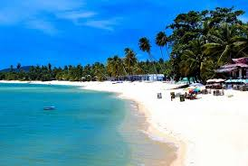
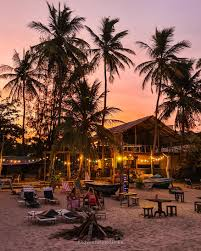
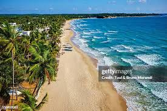

Trincomalee Beach (Uppuveli)
 
Uppuveli is a gold sand coastal resort town of the Trincomalee District, Sri Lanka located in the suburb of Sambalativu, 6 km northwest of the city of Trincomalee.
A historically popular tourist destination of the island alongside the nearby Nilaveli,
the numbers of visitors declined following the 2004 Indian Ocean Tsunami and Sri Lankan Civil War,
but have risen again since 2010. It is home to the Salli Muthumariamman Kovil on its coast.
Pronounced "Uppuveli", "Uppu" means salt while "vèli" is a Sri Lankan Tamil language term for land or open space.
Stub icon
This Eastern Province, Sri Lanka location article is a stub. You can help Wikipedia by expanding it.
 Location (Trincomalee Beach - Uppuveli)